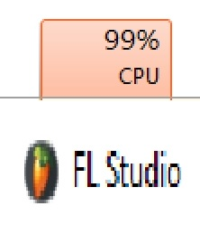

|
 |
|---|
I've mixed, mastered, recorded guitar, composed and produced a bunch of stuff for a bunch of projects (games, albums, videos, porn [citation needed])
I'm not a rich boi so I have to use cheap stuff and shit
My soundcard is a Behringer U-Phoria UM2. It's kinda cool if you want to step up from using your (possibly low quality) motherboard's inputs and shit,
but it adds some kind of hiss that I don't like and the headroom is kind of meh.
My microphone is a NEEWER NW-800. Good for beginners and shit but the frequency response kinda sucks (It's very dull sounding).
It also needs phantom power (not necessarily a bad thing) so you're gonna have to search for a soundcard or an external source that can power microphones that require it.
My keyboard is a swissonic EasyKey 49. It's a neat little keyboard, it's got a pitch wheel, a mod wheel, a slider and a knob.
The keys are not weighted (oOoO classical pianists SUFFER), the slider stopped working some time ago and one of the keys is starting to harden for some fucking reason???
The quality of this keyboard is so-so but hey, I've been using it for 3 years and it has never let me down.
I also "accidentally" dropped acetone on one of the black keys so now I have 3 white keys in a row. bleh.
The speakers are from my mother's old Technics EH750 Home Stereo.
I don't actually use them for mixing nor mastering, I only use them as reference as to how my shit would translate to the real world.
It's got a lot of EQ options so I can mess with those to make the speakers sound kinda flat. If I wanted to properly mix and shit I would use...
My HEADPHONES, AKG K702. Probably the best piece of gear I have rn. Openback headphones, almost neutral frequency response, wide soundstage and shit.
The only bad thing is that it lacks a ton of sub, but overall they're pretty amazing.
My other headphones, Superlux HD 662, my first "proper" set of headphones.
I say "proper" because all the past headphones I had were either a fucking muddy sub mess or straight up all mids and the Superlux at least attempt to be flat.
I mean, the Superlux still have a fuck ton of sub, but it's kinda useful on some occasions.
Santander (Strat copy). Fun fact, this guitar was a gift from the brother, of the husband, of my step-sister. Weirdass family trees ik.
Anyways this was the first proper guitar I've ever played. I've practiced a fuck ton of stuff with it. Kickass guitar, except the highs suck and if you play loudly the pickups distort...
Another fun fact, I once broke the volume knob by hitting it too hard while recording Lost Freedom's Rythm guitar. I couldn't use the thing for months, but it's already been repaired.
Daytona (Les Paul copy). First guitar I bought with my own money, mainly out of impulse because when I saw it I thought "OWOAH IT'S YUI'S GUITAR FROM K-ON!!!"
which I consider funny because it resembles Bocchi's Les Paul way closer lmao.
Anyways it sounds dark as fuck, which can be good if you're recording some heavy shit with it. Talking about heavy, this guitar weighs a fuck ton.
Also, you've probably seen this guitar a couple times in my youtube channel. Recorded a ton of shit with it, not disappointed.
OQAN 16 GB??? No fucking idea why they decided to name it that way but I find it funny. This acoustic guitar was a gift from my grandma btw.
ANYWAYS it sounds (again) dark as fuck, which combined with my NEEWER microphone means that I have to boost the treble by like fucking 30dB.
Apart from that, it's a neat little acoustic guitar and I've recorded a fuck ton of shit with it.
FL Studio and Reaper.
|  | ||
|---|---|---|
It grabs the OS by the balls and won't let it go until it finishes crashing.
Not even task manager can save you. Good luck.
|
|
|---|
oh yeah it has some cool features that you may discover by accident doing weird stuff
Kontakt, Roland XV-5080 JD-800 and S-50, Korg M1 and WAVESTATION, Omnisphere, Trilian, StylusRMX, PPG Waveterm, Fairlight CMI, v-Tron B117
Absynth, Delay Lama, Vital, Sylenth1, Massive
Addictive Drums, EZdrummer, Superior Drummer, The hundreds of one-shots I shamelessly stole from random songs
My guitar pitched down using a voice changer (black magic i know)
Addictive Keys
Way too fucking many to list but a good bunch of the samples I use were collected using very legal methods trust
Damage 2, EUROBASS, Joshua Bell Violin, Kontakt Factory Library, Metropolis Ark, Nucleus
Guitar Rig, MERCURIALL Metal Area, Ignite - NadIR
Pro-C 2, Pro-MB, OTT, CLA-76, 117 COMPRESSOR
Fruity Reeverb 2, Pro-R, Timeless 3
Pro-Q 3
Pro-L 2, Tonal Balance Control 2 (barely)
Fabfilter Saturn
Airwindows, VocalSynth, Shaperbox 3, NITROGEN
This one has saved my ass several times istg
Basically, everytime I get inspired (I come up with a melody or something) I quickly record it using my guitar or a piano and I save it in a "Random Ideas" folder
So in the case I'm working on a cool track and I don't know what else to do, I just jump on that random ideas folder, choose something and slap it in my track
Within a couple months (or years) you'll have a big ass arsenal of shit you can choose from.
Some random guitar improvisation I did at 4 am; this one was eventually turned into Lost Freedom.
THIS ONE got turned into a battle track for a game I can't mention! (Don't let LeFidoot know about it!!)
wip dont look at this, may or may not add smth here
HOW TO DOUBLETRACK SHREDDAGE X
SIDECHAIN TUTORIAL
VOCODEX TUTORIAL
The dude's made a fuck ton of useful youtube tutorials about mixing and engineering, I'll link some of the stuff that was the most useful to me.
I'd recommeding checking his videos for cool audio tips and tricks